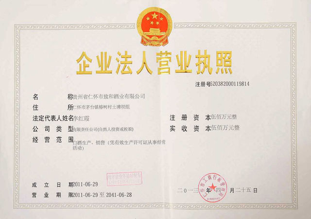
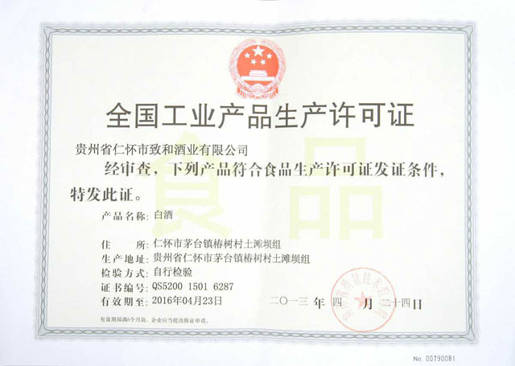
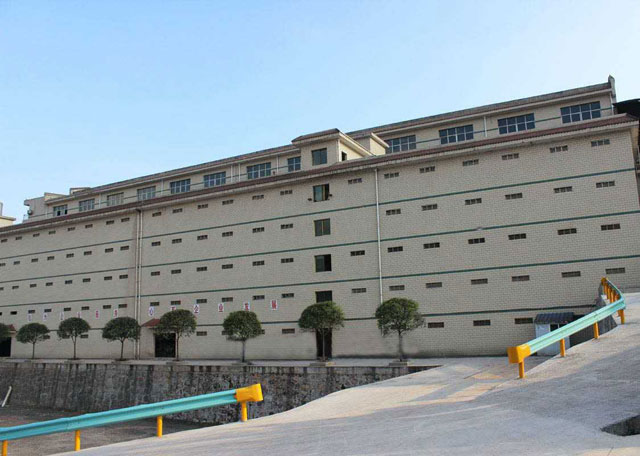
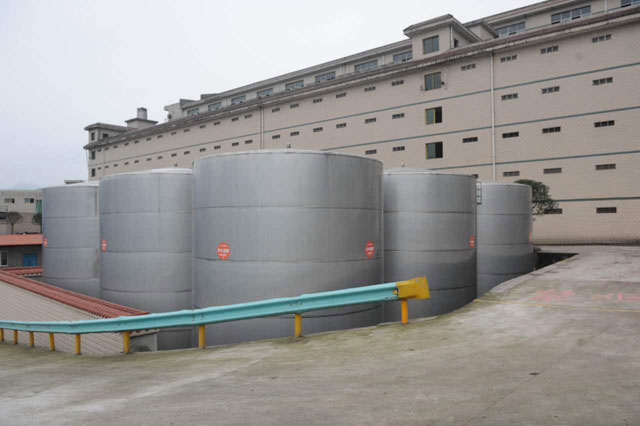
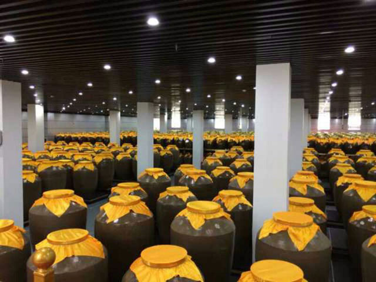
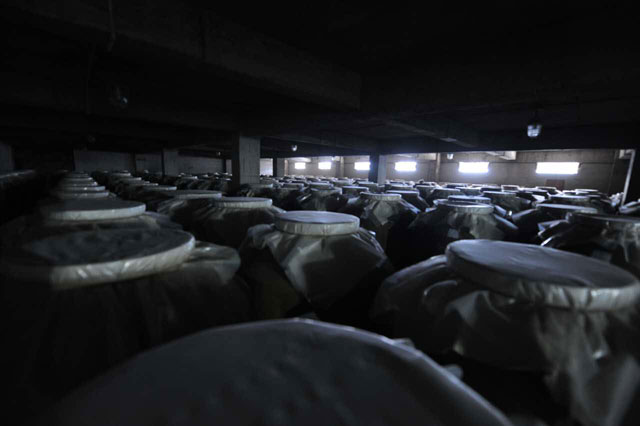
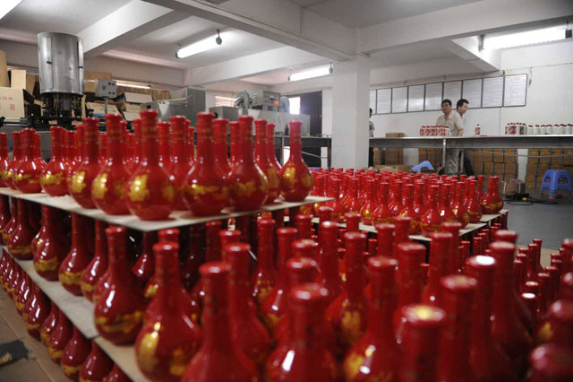

贵州省仁怀市致和集团
简 介
贵州省仁怀市致和集团由原仁怀县怀江酒厂改制组建而成，距今已有三十多年历史。
三十多年来的艰苦创业，致和酒业己发展成为占地面积数百亩，年产酱香型白酒5000余吨，总库存万余吨，在职员工近千人，总资产近5亿，是一家集生产、储存、化验、勾调、品牌策划、包装、物流、销售为一体的著名酿酒企业。
 
2014年，致和酒庄又在仁怀经济开发区（遵赤高速公路坛厂收费站出口站）落成，占地40余亩，库容20000吨，年包装能力6000吨，主营业务有：老酒封存、名酒典藏、库容租赁、对外包装服务、酱香白酒文化旅游观光、酱香白酒自愿认购等。
致和酒业占据得天独厚的自然优势，依托历史悠久的传统工艺，结合现代科学技术，创造了系列著名品牌：茅之和、百年乡河等30多个品牌，犹如光彩夺目的明珠，以其显著的特色优势深受消费者的喜爱。





公司创始人得先祖酱香型制酒密方，独成一体，技艺密不外传，独家掌控的特殊制曲工艺品质优越，形成了茅台地域酱香型白酒的独特风格。其独特之处有三个方面：一是制曲工艺独特，酱香型白酒酒质与用曲质量有很大关系，制曲原料主要为小麦、老曲、水，主要工序是将小麦按工艺要求磨细，拌入适量母曲和水，拌匀后人工踩成曲块，再装入发酵仓发酵。发酵周期至少40天，发酵时期温度掌控至关重要，温度过高或过低都会影响曲块质量。发酵好后再入库存放，存放周期至少半年，待老熟后方可出库投入生产。二是生产工艺独特，生产原料采用本地特产糯高粮、小麦、取赤水河之水为原料，经历代酱香型白酒宗师经验总结，茅台镇特殊的海拔、土壤、气候、微生物发酵群等自然条件对生产的辅佐，自端午制曲，重阳投料，经过二次投料、八次发酵、九次蒸馏、七次取酒，整个过程皆人工土法操作，酿造周期历时一年，所取之酒至少储存三年。三是勾兑工艺独特，将存放期达标的不同轮次所取之酒，不同年份所存之酒互相勾调出厂投放市场，整个生产、勾调过程不加任何添加剂及香精香料，纯粹酒勾酒、酒调酒，将茅台镇酱香型白酒特有的酸、甜、苦、涩、糊、枯、格（酱）调至诸味谐和，形成了茅台地域酱香型白酒的独家风格。
公司本着“从容致远、和谐共生”的核心价值，以“以人为本、以质求存、公平诚信、互惠共赢”的经营宗旨和对职工、对经销商、对消费者、对社会高度负责的态度，不断提升产品质量，创意求新，塑造世界品牌风范，造就现代企业形象，为弘扬中国优秀酒文化做出更大贡献。